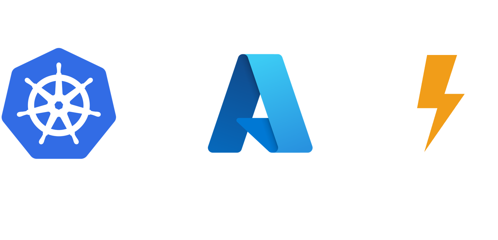
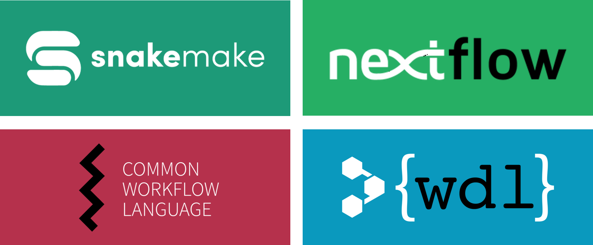
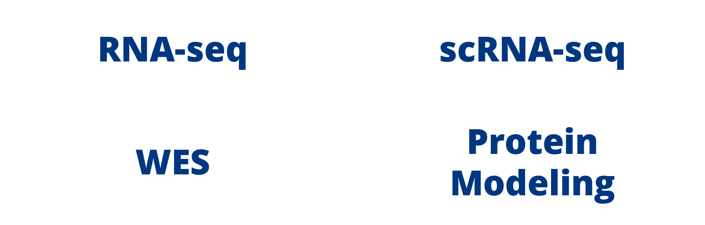

Kubernetes is an open-source container orchestration tool that organizations use to run and manage clusters of machines that run facets of an application. It turns out that this platform also works well with computationally-intensive bioinformatics pipelines. Using a cloud-based version of Kubernetes in Azure, we can orchestrate thousands of processes with ease.

Getting bioinformatics pipelines up and running can sometimes feel like taping random things together and hoping they don't break. Docker has really revolutionized scientific reproducibility by containerizing all the software dependencies together so that your workflow just... works. Building on the strengths of Docker and Kubernetes, ahab provides a platform that excels at enterprise-scale bioinformatics.


We have tried and true bioinformatics pipelines (for RNA-seq, WES, and more) ready for you to use. However, ahab fully supports the use of custom Docker containers with your own pipelines. This platform will plug right into your Azure architecture and scale your existing workflows with a very low learning curve.
No longer do we have to fuss with clunky HPC environments with schedulers and finite resources. ahab in the Azure cloud breaks through the previously frustrating limitations.
Need a single machine for 10 minutes or 1,000 machines for 10 hours? No problem. Dynamic scaling of the Kubernetes cluster will meet your computational needs - no matter how big or small.
Integrating your orchestration tools with ahab's API allows for automated job creation. This is perfect for standardized tasks like processing FASTQ files through an RNA-seq or WES pipeline as the samples trickle in.
Visibility is key to keeping track of how things are going. The ahab platform is designed to handle container logs and to keep an eye on a job's progress. You'll be able to integrate with your reporting tool (or use our Power BI report template) to see job statuses and to find your results.
Copyright Tuple, LLC 2024 | Privacy Policy